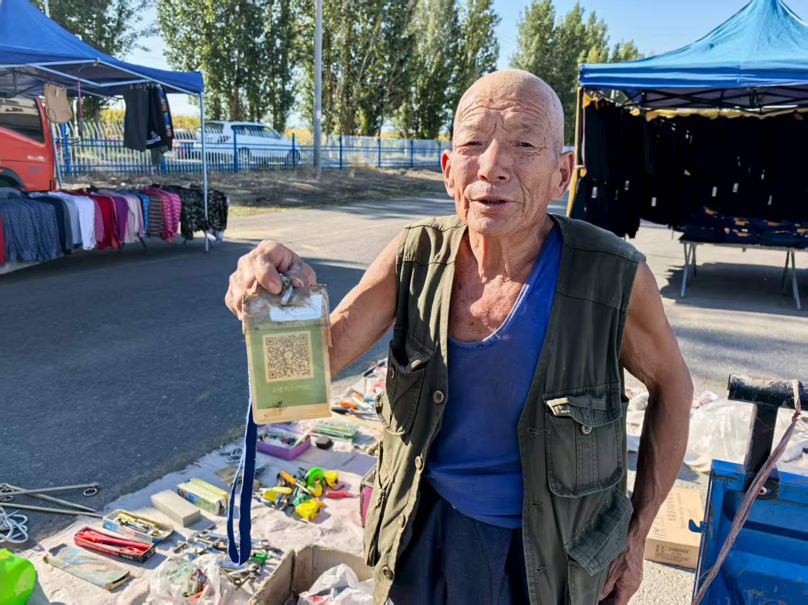
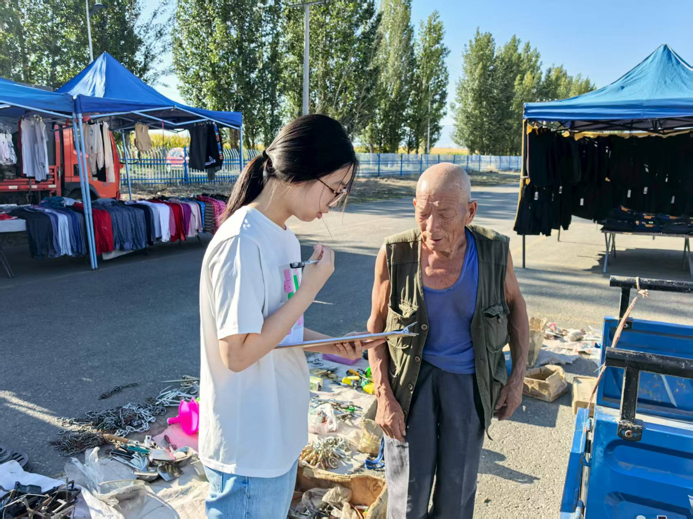
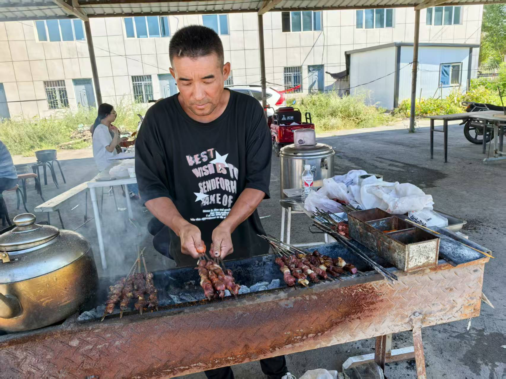
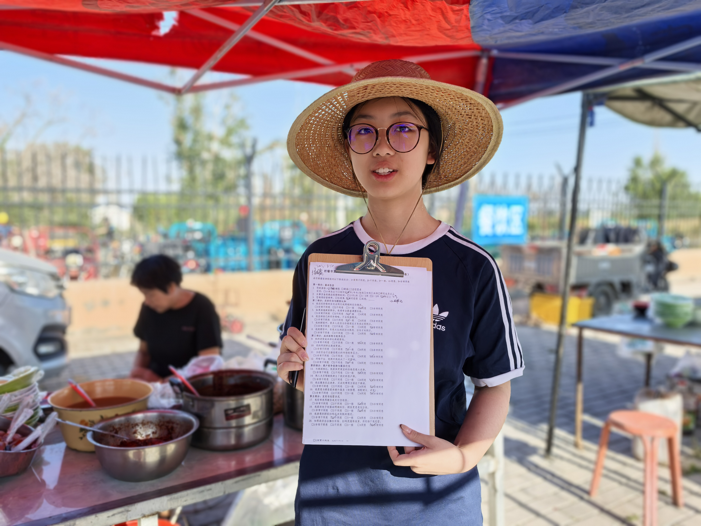

和顾客、摊主聊一聊
了解他们平时怎么买、怎么卖，以及价格、熟人关系和摊位位置在其中起什么作用。



我在问卷里问顾客：会不会比较不同摊位的价格？愿不愿意多花一点钱找熟悉的摊主？为了买得便宜一些，能接受多走多远？
我也问了摊主：别家降价时，会跟着降吗？什么情况下会坚持原价？摊位的位置，对生意有多大影响？
便宜多少，才会换一家？
认识摊主，会更愿意买吗？
多走几步，还愿意买吗？
问卷和模型围绕这三个因素展开
这项研究以新疆市集为主。我通过问卷了解顾客和摊主的选择，也在苏州和重庆拍照、观察，看看不同地方的市集是什么样。
了解他们平时怎么买、怎么卖，以及价格、熟人关系和摊位位置在其中起什么作用。
把这些具体的选择写成问卷题目，再用价格、信任和距离等概念来整理回答。
分析哪些回答存在关联，同时检查样本和题目设计会怎样影响结果。
问卷研究集中在新疆；苏州和重庆的走访以观察和影像记录为主。
这次回新疆，我把研究整理成了《超越价格：集市里的经济学》手册，带到市集上和摊主们一起看，聊聊里面的内容。
查看全部 12 张回访照片这里收录了论文、现场照片、问卷汇总，以及研究用到的模型和方法。
问卷数量已与原始记录核对。照片来自三个地点，但问卷样本并非在三地均等采集。
90 位消费者、40 位商户，对价格、熟悉的摊主和摊位位置有什么看法？可以切换题目和图表查看。
这里展示消费数据回归工作簿中的五变量模型，用来查看价格变化评分、信任、价格优先度、空间成本和搜索行为与摊贩选择的关联。论文使用的是六变量版本。
阅读时需要注意：价格变化评分包含了用于衡量摊贩选择的同一道题，因此预测变量和结果有重叠。系数和拟合度不能作为独立的解释证据，这次问卷也无法说明因果关系。
研究笔记借助 Bertrand 价格竞争、Hotelling 空间竞争、不对称博弈和声誉博弈，讨论五金摊贩如何定价，以及顾客为什么选择某个摊位。下面介绍这些模型的假设，以及它们如何帮助设计问卷。
在这个简化模型中，顾客会权衡价格 p、偏好或信任 δ，以及行走距离带来的成本 t·d。
标准 Bertrand 模型假设商品相同，顾客选择价格最低的卖家。在模型的假设下，竞争会把价格压到边际成本。研究笔记在此基础上加入熟客关系、商品与服务差异，以及顾客只比较部分摊位的情况。
Hotelling 模型提供了一种分析摊位位置的方法：把市集通道简化为一条线，考察顾客是否愿意多走一段路来换取更低的价格，以及这种权衡可能怎样影响摊主定价。
这一模型比较摊贩与商超各自的优势，包括成本、议价空间、熟客关系、品牌和售后服务。为简化分析，顾客被分为更看重价格的一组（α）和更看重服务的一组（1−α），用来讨论两类卖家如何争取顾客。
以下是理论笔记中的问卷设计构想，展示模型变量可以对应哪些问题。这些参数尚未在本研究中估计。
| 模型变量 | 问卷问题 | 经济学含义 |
|---|---|---|
| α | 价格 vs 服务偏好、顾客中“图便宜”的比例 | 更看重价格的顾客占多大比例 |
| Δ | 摊贩便宜多少才会转去摊贩购买 | 多大的价差会让顾客改变选择 |
| δ | 是否有熟悉摊贩、是否愿意为熟人多付一点 | 熟悉与信任在选择中的作用 |
| t | 是否愿意多走几分钟购买更便宜商品 | 顾客对行走距离有多敏感 |
| cA, cB | 进货成本、利润率、商超与摊贩成本差异 | 两类卖家的成本差异 |
| G | 摊位安排、扫码补贴、政策支持期待 | 政策支持可能怎样影响竞争 |
这些拟议问题涉及价格与服务、熟悉的摊主、支付方式，以及顾客对市集的评价。设计目的是了解顾客如何权衡这些因素，并为进一步研究模型中的参数提供思路。
这些拟议问题询问摊主如何定价、应对竞争、控制成本，以及怎样看待顾客需求和服务。重点是了解他们除了降价，还会采用哪些经营办法。
消费者问卷询问受访者怎样比较价格、选择摊位，以及熟悉的摊主、服务和位置是否影响购买。商户问卷则询问定价、利润压力、客流和摊位位置，从买卖双方了解市集中的选择。
研究参考了空间竞争、价格歧视、重复交易中的信任，以及边缘经济体的相关理论，用来讨论市集中的价格、熟客关系和位置选择。
问卷记录的是受访者在某一时点对自身行为的描述，因此结果只能说明样本中的关联，不能证明因果关系或市场已经达到均衡。部分模型变量使用了重叠的题项，年轻受访者也较少，解读结果时需要考虑这些限制。

爷爷奶奶生活在新疆，是他们让我开始关注那里的市集。通过他们，我联系到当地居民，逐渐了解大家平时怎么买、怎么卖。
我负责研究设计、编写问卷、整理实地材料和比较分析。我想弄清楚的是一个很日常的问题：买同样的东西，人们为什么会选不同的摊位？